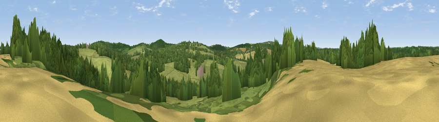

Viewpoint near Groombridge
#41987 in England · top 64% of its area beats it · near GroombridgeWhere it is
The exact computed spot (TQ 55175 35275). Click the marker for map links.
The view, rendered

A 360° render of this exact spot computed from the terrain model, tree cover and land cover — summer colours, afternoon light, calibrated against photographs of famous viewpoints. Real trees, hedges and buildings will differ in detail.
The panorama
Grey silhouette: terrain skyline in each direction (720 bearings, Earth curvature and refraction included). Dashed green: skyline with trees (+15 m) and buildings (+8 m) as obstacles. Blue strip: how far the ground is visible on each bearing.
Where the view opens
Wedge length = distance to the farthest visible ground on that bearing (vegetation-aware). Rings at 10, 25 and 50 km.
What fills the view
49% woodland · 45% grassland · 6% cropland
Angular shares of the visible panorama (visual magnitude), not map area. Landscape diversity 0.39 (0–1 Shannon).
Key numbers
More beautiful places nearby
The staircase of upgrades: each row has a higher view potential than everything closer. Driving times are estimates from straight-line distance, calibrated against real road routing — check an actual route before setting out.
| Place | Direction | Drive | Score |
|---|---|---|---|
| Viewpoint near Town Row | SSE · 2 km | ~6 min | 48.4 |
| Viewpoint near Argos Hill | S · 7 km | ~15 min | 53.0 |
| Viewpoint near Upper Hartfield | WSW · 9 km | ~17 min | 59.6 |
| Viewpoint near Sevenoaks Weald | NNW · 17 km | ~30 min | 60.2 |
| Viewpoint near Ide Hill | NNW · 17 km | ~30 min | 62.7 |
| Viewpoint near Shipbourne | N · 18 km | ~31 min | 63.0 |
| Viewpoint near Shipbourne | N · 18 km | ~31 min | 66.2 |
| Brightling Obelisk [Brightling Down] | SE · 18 km | ~32 min | 69.1 |
51.09579, 0.21467 · source: screening · position refined by local search. Computed location — check access rights before visiting.